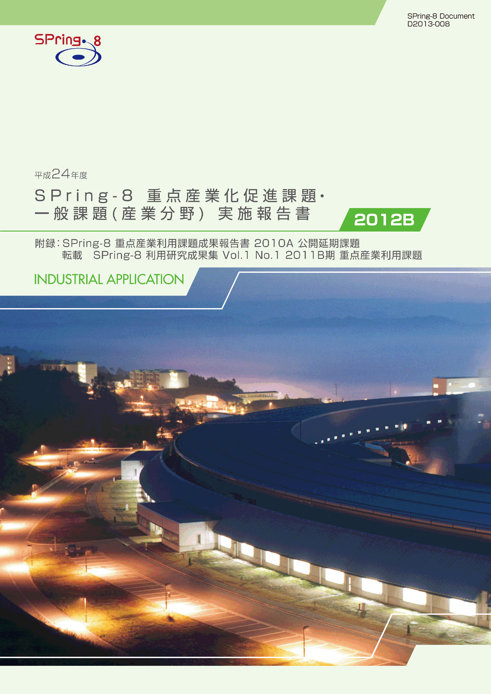
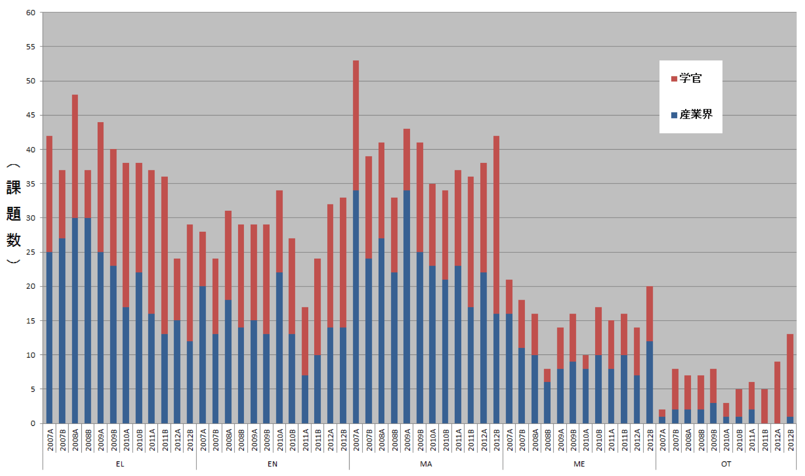
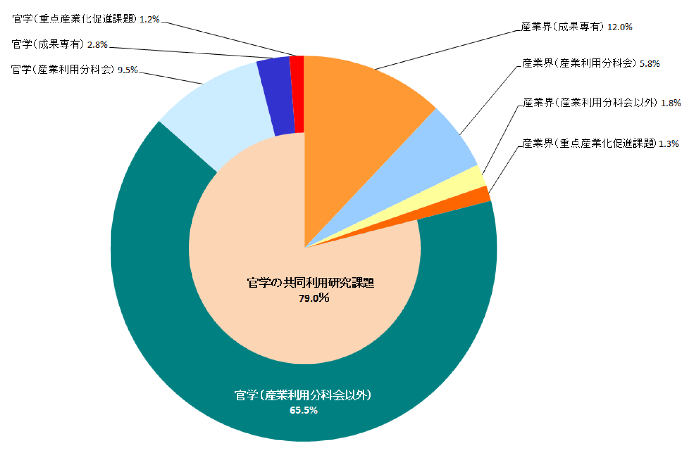
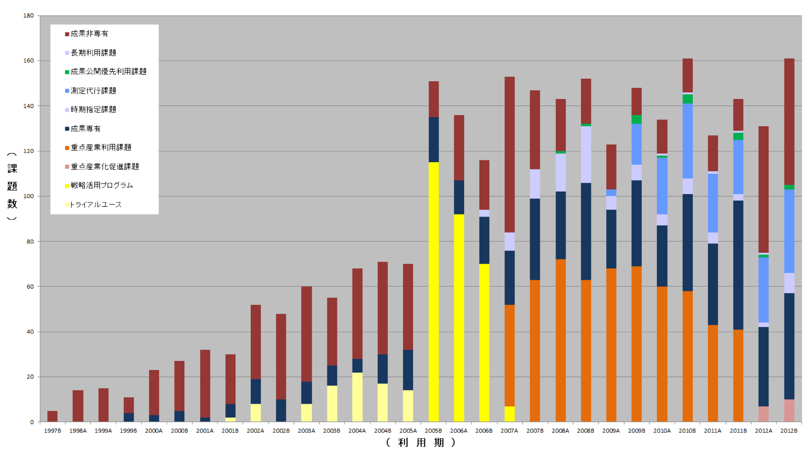
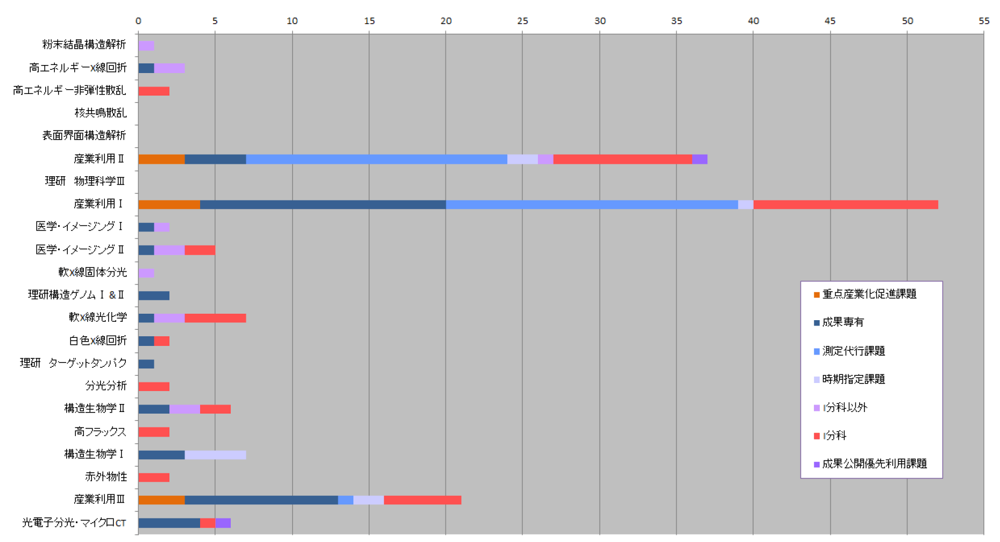

目次

1. はじめに2. 課題募集制度の概要
3. 成果公開の考え方
4. 実施状況
5. 産業利用分野の利用動向
6. 報告書の採録対象
7. 報告書
* 送付を希望される方は、連絡先（氏名、所属、〒住所、E-mail）をご記入の上、 事務局 support@spring8.or.jp までE-mailでご連絡ください。
はじめに
平成19年度（2007A期）より領域指定型の重点研究課題のひとつとして5年間実施した重点産業利用課題は 平成23年度（2011B期）をもって終了し、平成24年度より産業利用分野成果非専有課題の利用制度は 一般課題と重点産業化促進課題になった。 本報告書は2012B期の産業利用分野における課題実施状況の報告を目的として実施した一般課題（産業利用分野）と 重点産業化促進課題のうち、SPring-8利用研究成果集としての審査を行わなかった課題の報告書を収録したものである。
課題募集制度の概要
- 一般課題（産業利用分野）
一般課題（産業利用分野）の課題とは、課題申請の際に産業利用分野（I）での課題審査を希望した成果非専有の 一般課題（課題審査は課題審査委員会産業利用分科会が行う）を指し、課題申請者の所属で区別されるものではない。 大学等の公的研究機関に所属する者でも、一般課題（産業利用分野）への申請は可能である一方、 民間企業に所属する者が他の審査分野に申請することも可能である。 なお、民間企業に所属する者が産業利用分野以外の分野に申請した課題は一般課題（産業利用分野）としては扱わない。 一般課題（産業利用分野）の募集は他分野の一般課題と同様に、年2回の課題募集期間において 全ての共用ビームラインへの申請が可能である。 これに加えて、平成23年3月2日実施した重点産業利用課題評価委員会において、 "継続が望ましい"と提言された重点産業利用課題の制度を産業利用分野の一般課題に適用している。 この産業利用分野の一般課題に特徴的な制度は以下の4項目である。
a) 産業利用ビームラインI（BL19B2）、II（BL14B2）、III（BL46XU）は半期ごとに前半を1期、後半を2期とした2回の課題募集を行う（年4回課題募集を実施）。1期と2期の両方で利用実験を行いたい場合は、継続的な研究内容の課題であってもその都度、新規課題として応募することが必要である。
b) 新規利用拡大の観点から課題審査において利用経験を考慮する。
c) 民間企業利用拡大の観点から課題審査において所属機関を考慮する。
d) 課題実施後約2～4か月以内に所定の書式の産業利用課題実施報告書を提出する。なお、この報告書はSPring-8利用研究成果集として審査を受けることも可能である。
e) 全採択課題に担当コーデイネーターを配置する。
f) 科学技術的妥当性に関する審査は
(1)産業基盤技術としての重要性および発展性
(2)社会的意義および社会経済への寄与度の観点を重視して実施する。
に重点をおいて実施する。
- 重点産業化促進課題
「重点産業化促進課題」は領域指定型の重点研究課題として、平成23年9月13日に指定された。この「重点産業化促進課題」は、平成22年度に閣議決定された新成長戦略に掲げられているように研究開発のデスバレー克服に向けた、大学や公的研究機関のみならず産業界からの利用を通じた産学官連携（産学官ネットワーク化）による技術開発を支援するものである。この趣旨にもとづき、課題の募集、審査、実施及び報告は一般課題とは若干異なった制度となっている。
2-1) 募集の対象
産学官連携促進が目的であるため、研究組織（共同で実験を行うグループ、つまり実験責任者と共同実験者から成るグループ）が「産学」、「産官」、もしくは「産官学」である課題を募集の対象とする。例えば、産業界（民間企業を指す）を含まない「官学」の研究組織や産業界のみから成る組織は対象とはならない。また、JASRIは独立した所属機関とは見なさない（JASRIは「産」「官」のいずれにもあたらない）。
申請の折には産学官連携が効果的に行われることを明らかにするために、課題実施にあたって、それぞれの所属機関ごとの役割分担を明記することが求められる。
2-2) 対象ビームライン、シフト数割合、及び募集
産業利用ビームラインI（BL19B2）、II（BL14B2）、III（BL46XU）を対象に、ユーザー実験に供するビームタイムのうち15%以内を配分する。
募集は一般課題と同時期に半期2回行う。なお、1期募集において後述の通期課題の2期分のシフト数も含めた合計シフト数が半期を通じたビームタイムの上限に達した場合は2期に募集を行わない。
2-3) 通期課題
1期、2期の両方で利用実験を行いたい場合は、その都度新規課題としての応募が必要であるが、継続的･計画的な実施により一層の成果創出が期待される課題は、“通期課題”とし1期応募の折に2期分のシフト数も含めた申請を受付ける。なお、2期は通期課題の募集は行わない。
2-4) 審査
最初に研究組織が産学官連携であるかどうかの申請要件について審査を行う。申請要件を満たさない課題は重点産業化促進課題として不採択となる。申請要件を満たす課題については、一般課題（産業利用分野）と同様に課題審査委員会産業利用分科会が行う。なお、重点産業化促進課題として不採択となった課題は、自動的に一般課題（産業利用分野）の課題として、他の一般課題と一緒に改めて審査される。重点産業化促進課題においては一般課題（産業利用分野）の観点に加えて産官学連携が有効に機能するかどうかも含めて審査する。
2-5) 報告
WEBより提出するビームタイム利用報告書、利用実験課題報告書に加えて課題実施後約2～4か月以内に所定の書式の重点産業化促進課題実施報告書を提出する。なお、この報告書はSPring-8利用研究成果集として審査を受けることも可能である。
成果公開の考え方
成果の公開については、重点産業化促進課題、一般課題（産業利用分野）ともに他の成果非専有の一般課題と同様に学術誌上への論文掲載（博士論文も含む）もしくはSPring-8利用研究成果集への採録による成果公開が求められる。この産業利用課題実施報告書及び重点産業化促進課題実施報告書の提出は成果の公開とは認定されないが、これらの報告書は著者からの申し出によりSPring-8利用研究成果集としての審査を受けることが可能である。SPring-8利用研究成果集としての審査を受けない実施報告書は、JASRIコーデイネーター等による校閲を経て課題実施期が終了して約6カ月後に出版･公開されるが、それ以外はSPring-8利用研究成果集としての審査終了後に公開される。なお、一般課題（産業利用分野）は実験終了後一定期間内に成果専有課題への切替を申請することができるが、重点産業化促進課題は成果専有課題への切替は認めない。なお、平成24年度2012B期の一般課題（産業利用分野）及び重点産業化促進課題の実施報告は、平成26年9月に開催予定の「第11回産業利用報告会」等で口頭及びポスター形式での報告を予定している。
実施状況
以下に平成24年度2012B期の重点産業化促進課題、及び一般課題（産業利用分野）の応募・採択結果を表1、表2にまとめる。- 応募・採択結果 重点産業化促進課題
表1．応募時期及び研究機関別課題応募・採択結果
*重点産業化促進課題で不採択となり、一般課題として再審査され採択された課題は 採択数から除外している。募集時期 機関分類 応募数＊ 採択数＊ 採択率（%） 第1回募集 学官 12 8 66.6 産業界 11 6 54.5 合計 23 14 60.9 第2回募集 学官 5 3 60.0 産業界 3 2 66.7 合計 8 5 62.5 総計 31 19 61.3
2012A期は重点産業化促進課題が開始されたばかりで、制度が多くの利用者に理解してもらえず、 重点産業化促進課題で不採択となった課題の中で研究組織が官学のみなど応募要件を満たさない申請が多数あった。 今回も応募要件を満たしていない課題もあったが、 その数は2012A期より減少し制度が利用者に浸透しつつあることを示唆する結果となった。 また、2012A期はBL19B2で第1期に通期課題として採択された課題の第2期分のビームタイムを含めると 全ビームタイムの15%に達したため、第2期分の募集は実施していない。 今期もBL14B2を除いて通期課題を複数採択したが、第2期にも重点産業化促進課題を募集することができた。
採択率は1期60.9%、2期62.5%で2012A期の50.0%, 37.5%よりも高くなったものの一般課題（産業利用分野）と比較して10%低くなっている。 しかし、重点産業化促進課題で不採択となり、再審査を経て一般課題として採択された課題は2012B第1期が9課題、第2期が2課題であるため、 これらを含めた採択率は第1期87.0%、第2期87.5%と一般課題よりも高く、 産官学連携の体制で申請された課題は他の課題よりも高い評点を得る傾向があることを示唆している。
- 応募・採択結果 一般課題（産業利用分野）
表2．応募時期及び研究機関別一般課題応募・採択結果
*応募数には重点産業化促進課題で不採択となり、一般課題として再審査された課題 （1期産業界 3、学官 9、2期 産業界 1、学官 2）、及び重点グリーン/ライフ･イノベーション推進課題で 不採択となり一般課題として再審査された課題（1期のみ 産業界 1、 学官 4）を含む。募集時期 機関分類 応募数＊ 採択数＊ 採択率（%） 第1回募集 学官 68 53 78.0 産業界 51 32 62.7 合計 119 85 71.4 第2回募集 学官 25 20 80.0 産業界 19 11 57.9 合計 44 31 70.5 総計 163 116 71.2
一般課題（産業利用分野）は全応募数が163課題（重点産業化促進課題、重点グリーン/ライフ･イノベーション推進課題で不採択となり、 一般課題として再審査した課題を含む）2011B期重点産業利用課題の応募数169課題とほぼ同じで、 第1期, 第2期の応募数の割合も2011B期と同じ傾向であった。なお、今期も第1期、第2期ともに学官の応募数が産業界の応募数を上回っていた。 この傾向は2011年度より見られているが、後述するとおり、産業界が積極的に成果専有課題の利用をすすめていることを反映したものと考えている。
例年、第2期は第1期より採択率が著しく低くなる傾向があるが、2012B期の一般課題（産業利用分野）の採択率は 第１期71.4%、第2期70.5%と大きな差がなく、2012B期は1期、2期のシフト数配分や募集が適切に行うことができたものと考えている。
一方、2011B期までは第1期、第2期ともに産業界の採択率が学官を上回っていたが、 今期は第1期、第2期とも学官の方が高くなった。 その結果、一般課題（産業利用分野）に占める産業界所属利用者の採択課題数の割合は37.1%にまで低下している。 大学等の研究機関に所属する研究者が放射光の産業利用への取り組みを深めることは歓迎すべきことであるが、 産業界による放射光利用普及の窓口としての役割も担うため、 成果非専有の一般課題における産業界の採択課題数割合を50%程度にまで引き上げることが望まれる。
- SPring-8利用研究成果集としての審査
前記のとおり2011B期より成果公開の扱いが変更になったため、実験責任者の希望に応じて 重点産業化促進課題実施報告書、及び一般課題（産業利用分野）実施報告書を SPring-8利用研究成果集としての査読審査を可能とした。 平成25年6月30日の時点で119課題のうち43課題がSPring-8利用研究成果集としての審査を希望している。 公開は査読審査が終了し成果審査委員会での承認後となるため、これら43課題の報告書はここには採録されない。
産業利用分野の利用動向
-
１)産業分野ごとの動向
図1は、産業利用分科会で審査を経て採択された成果非専有課題実施件数の推移である。 2012A期以降は重点産業化促進課題と一般課題（産業利用分野）の和、 2011B期以前は重点産業利用課題と一般課題（産業利用分野）の和である。 かつて産業利用の主役であったエレクトロニクス分野（EL）の割合は2012A期に大きく減少し、 2012B期も横ばいのままである。特にこの分野での民間企業の利用数は過去6年間で最少となった。 今期、実施が最も多かったのは素材分野（MA）で、エネルギー環境分野（EN）が続いている。 産業界の利用に注目した場合も、実施課題数は素材分野(MA）、エネルギー環境分野（EN）、エレクトロニクス分野（EL）の順で 、国内の産業構造の変化を反映したものとなっている。 なお他分野の実施課題が漸減傾向にある中で、実施課題数は多くないものの健康･医療分野（ME）の利用が大きく伸びた。 これは、BL19B2の小角散乱装置が本格的運用を開始したことの効果によるものと考えている。

図1. 産業利用分野における成果非専有課題実施件数
２）2012B期における民間企業の利用状況
図2は2012B期共同利用研究実施課題（共用ビームラインで実施した課題）を 所属機関、専有/非専有の別でその割合を示している。 民間企業に所属する実験責任者の課題数の割合は2012A期と同じ21.0%であった。 その内訳は一般課題（産業利用分野）が5.8%、重点産業化促進課題が1.3%、測定代行を含む成果専有課題が12.0%で、 成果専有課題が産業界のSPring-8の利用の主流となりつつある傾向がより鮮明になった。

図2. 2012B期 共同利用研究実施課題における民間企業の実験責任者の割合
３）民間企業の課題実施動向
図3は共用ビームラインにおける民間企業の課題実施状況の推移を課題種ごとに示している。 毎年B期はA期よりも実施課題数が多くなる傾向があるが、2012B期も2012A期より実施課題が30件程度多い。 一般課題（産業利用分野）等の成果非専有課題の実施件数は2012A期、2012B期ともほぼ同じであるが、 測定代行を含む成果専有課題の実施件数が大きく伸びたことにより東日本大震災以前の水準にまで回復した。

図3．民間企業による共同利用研究実施課題の課題分野別推移
４）民間企業の共用ビームライン利用状況
2012B期におけるビームラインごとの民間企業による利用件数を図4に示す。 14本のビームラインで産業界による共同利用実験課題が実施されているが、 2012A期に利用があった核共鳴散乱や高圧構造物性のビームラインでの実施はなかった。 また、BL17SU（理研 物理科学Ⅲ）では産業界によるPEEMの利用が盛んに行われていたが今期の利用がなかったことは、 この技術を利用した技術開発が一段落したことを示唆していると考えている。 なお、一般課題（産業利用分野）及び成果専有課題は、 産業利用ビームラインI、II、III（それぞれBL19B2、BL14B2、及びBL46XU）での実施が 他のビームラインよりも著しく多いのはこれまでと同様である。 また、これらのビームラインにおいて測定代行を含む成果専有課題が 一般課題（産業利用分野）及び重点産業化促進課題などの審査課題よりも実施件数が多くなるのもここ数年の傾向である。 なお、産業利用III（BL46XU）では2012A期で長期利用課題が終了することにより実施課題数の増加を期待していたが 2012A期と比較して3件増加したのみであった。2012B期後半より測定代行の受入れを開始したため、 今後は産業界による利用が次第に増加するものと期待している。

図4．2012A期 利用技術分野別（ビームライン別）民間企業利用件数
報告書の再録対象
平成25年6月30日の時点で119課題のうち43課題がSPring-8利用研究成果集としての審査を希望している。
これ以外の76課題の重点産業化促進課題実施報告書と産業利用課題実施報告書を採録している。
併せて、未収録の2011B期2課題、2012A期2課題も収録している。
また、公開延期期間が終了してWEB（
http://support.spring8.or.jp/Report_JSR/Jsr_ptponed.html）で公開されている 2010A期に実施された12課題の報告書も
付録として掲載している。
また、SPring-8利用研究成果集としての査読審査が完了した2011B期に実施した重点産業利用課題の報告も利用研究成果集
（http://user.spring8.or.jp/resrep/?cat=3）より転載している。
SPring-8利用研究成果集 Vol.1 No.1 2011B期 重点産業利用課題 （http://user.spring8.or.jp/resrep/?cat=3）
| 2011B1754 | 界面活性剤処理によるヒト皮膚角層の構造変化の小角・広角X線散乱法を用いた解析 | 山田 真爾 | 花王株式会社 |
| 2011B1772 | 微結晶核延伸法により高強度化したバイオベースポリマー繊維の超小角X線散乱測定による高次構造解析 | 本郷 千鶴 | 東京大学 |
| 2011B1775 | すれすれ入射X線回折による有機半導体薄膜結晶の構造解析 | 越谷 直樹 | ソニー株式会社 |
| 2011B1785 | X線回折による圧電体(1-x)(Na0.45K0.55)NbO3 + xCaTiO3の結晶構造解析 | 岩堀 禎浩 | 株式会社村田製作所 |
| 2011B1860 | 有機半導体の薄膜中における配向状態解析 | 尾坂 格 | 広島大学 |
| 2011B1942 | 水熱条件下でのトバモライト生成過程のその場X線回折（12） | 松野 信也 | 旭化成株式会社 |
| 2011B1951 | 超小角X線散乱によるインスリンアミロイド線維の構造解析 | 茶谷 絵理 | 神戸大学 |
| 2011B1955 | 高強度鋼の転動疲労下における内部き裂形態の観察 | 牧野 泰三 | 新日鐵住金株式会社 |
連絡先（氏名、所属、〒住所、E-mail）をご記入の上、事務局 support@spring8.or.jp までE-mailでご連絡ください。